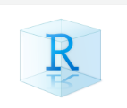
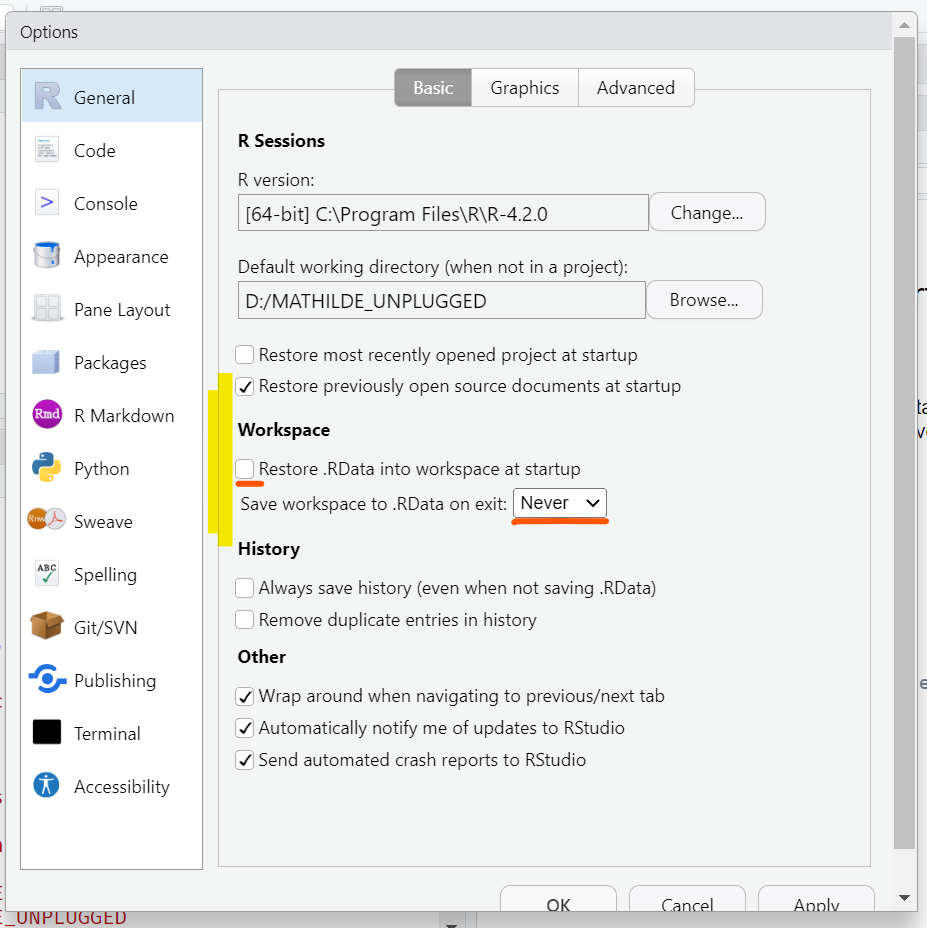

install.packages("here") # installe le paquet {here} Importer des données
Core
RStudio
Data Import
Créez un projet Rstudio, installez les paquets utiles et importez des données pour travailler dans R.
Objectifs
- Créer un projet RStudio
- Mettre en place un code organisé et bien documenté
- Installer et charger des paquets
- Écrire des chemins d’accès robustes pour les fichiers
- Importer et inspecter des données
Important
Les principes que vous avez appris dans l’ Introduction à R s’appliquent également ici : nous devons faire de notre mieux pour nous assurer que nos projets ne fonctionneront pas seulement aujourd’hui, mais qu’ils pourront également être réutilisés et partagés à l’avenir. Bien que cela ne soit pas toujours facile, il existe plusieurs bonnes pratiques qui peuvent nous aider, et l’une des plus importantes est de commencer avec une bonne base de code organisée.
Mise en place du projet
Structure des dossiers
Si ce n’est pas déjà fait, téléchargez le dossier du cours, sauvegardez-le à un endroit [non connecté à OneDrive]{.hovertip bs-toggle=‘tooltip’ bs-title=“OneDrive ne fonctionne pas bien avec R car il va constamment synchroniser certains dossiers de projets, ce qui peut entraîner des erreurs ou des problèmes de mémoire”}. Décompressez l’archive et ouvrez le dossier non compressé.
Ce dossier donne un exemple de structure typique (et fortement recommandée) pour vos projets de code :
- données
- propres
- brut
- R
- résultats
- LISEZ-MOI
Ce dossier sera votre répertoire de travail pour toutes les sessions de ce cours. Vous y créerez un projet Rstudio (explications ci-dessous), et y enregistrerez tous vos scripts. /R. Les données du cours se trouvent déjà dans data/raw.
Définitions
Pour travailler dans le cadre de cette session, vous devez comprendre les deux concepts suivants :
Répertoire de travail. Le répertoire de travail est l’emplacement (dossier) où se trouve votre session R en cours. Si vous enregistrez un fichier, par exemple, il sera enregistré dans ce dossier par défaut. De même, lorsque vous souhaitez ouvrir un fichier, ce dossier sera affiché par défaut. Tous les chemins relatifs seront relatifs à ce répertoire de travail. Par défaut, R choisit généralement le dossier “Documents” comme répertoire de travail sur les machines Windows.
Racine. La racine fait référence au niveau de dossier le plus élevé du répertoire de travail. Si le dossier de votre cours s’appelle FETCHR la racine se trouverait directement à l’intérieur de celui-ci (et non dans l’un de ses sous-dossiers comme R ou Data).
Projets RStudio
Un projet RStudio peut être utilisé pour vous faciliter la vie et vous aider à orienter [RStudio autour des différents fichiers utilisés dans votre code.]{.hovertip bs-toggle=‘tooltip’ bs-title=‘Techniquement, un projet RStudio n’est qu’un fichier contenant des métadonnées qui indiquent à RStudio quels fichiers ouvrir et où placer votre répertoire de travail. Cela vous évitera d’avoir à gérer vous-même votre répertoire de travail’}
Pour rappel, votre interface doit ressembler à ceci :

Ouvrez RStudio et créez un nouveau projet en cliquant sur File > New Project > Existing Directory > Browse, en naviguant dans le dossier du cours (en l’ouvrant) et en cliquant sur Create Project.
Dans l’explorateur Windows, regardez le dossier du cours. Vous devriez maintenant voir un nouveau fichier avec l’extension .Rproj qui a une petite icône bleue avec un R.

Note
Si vous ne voyez pas ce fichier, c’est probablement parce qu’il est caché par défaut sur votre ordinateur. Pour modifier ce paramètre dans l’explorateur Windows, allez dans le menu Afficher et sélectionnez Filename Extensions.
Lorsque vous ouvrez un projet RStudio, RStudio démarre une nouvelle session R, ouvre les fichiers de projet associés et définit votre répertoire de travail à la racine du dossier du cours. À ce moment-là, RStudio affiche également les sous-dossiers de ce répertoire dans le panneau en bas à droite.
Astuce
Il est fortement recommandé de mettre en place un projet RStudio distinct pour chacune de vos analyses afin de garantir que les fichiers de votre projet restent organisés et gérables.
Il existe plusieurs façons d’ouvrir un projet RStudio :
- Utilisez le menu RStudio
File > Open Projectpuis sélectionnez le projet que vous souhaitez ouvrir.Rproj - Cliquez sur [le bouton
Project: (none)]{.hovertip bs-toggle=‘tooltip’ bs-title=‘Vous pouvez cliquer sur ce bouton à tout moment pour savoir dans quel projet vous travaillez actuellement.’} en haut à droite de l’interface RStudio - Naviguez dans l’explorateur de fichiers jusqu’au dossier d’analyse et double-cliquez sur le fichier avec une extension
.Rproj
Les options de RStudio
Avant de poursuivre, mettons à jour certains paramètres par défaut de RStudio qui posent problème :
Ouvrir les options globales (Tools > Global Options) et ouvrez l’onglet General (menu de gauche). Assurez-vous qu’aucune des cases des sections R Sessions, Workspace ou History sont cochées.

Lorsqu’elles sont cochées, ces options amènent RStudio à enregistrer les objets de votre environnement et ils seront chargés de nouveau, chaque fois que vous ouvrirez une nouvelle session R. Bien que ces options par défaut puissent sembler une bonne idée, il est préférable de toujours commencer votre travail à partir d’une [session R vide]{.hovertip bs-toggle=‘tooltip’ bs-title=‘Une session vide signifie que l’environnement est vide, mais que vous avez toujours vos scripts !’} afin d’éviter les bugs.
Important
N’oubliez pas que toute commande ou sortie nécessaire au nettoyage et à l’analyse doit être enregistrée explicitement dans un script, dans un ordre donné, et fonctionnel.
Création d’un nouveau script
Ouvrez un nouveau script et enregistrez-le dans le répertoire R de votre projet sous le nom import_data.R.
Ajoutez quelques métadonnées au début du script, comme indiqué dans la première session, en utilisant la fonction commentaires. Veillez à inclure :
- Le titre
- L’auteur de l’article
- La date de création
- La description du projet
Vous êtes maintenant prêt à commencer à coder !
Paquets
Les paquets sont un ensemble de fonctions qui qui permettent d’aller plus loin qu’avec les fonctionnalités basiques de R. Vous les utiliserez beaucoup dans ce cours et dans votre vie quotidienne. Heureusement, en tant que langage open source, les paquets R peuvent être téléchargés et installés gratuitement sur internet.
Note
Dans R, les paquets sont référencés à l’aide de {}. Par exemple {ggplot2} est le nom du paquet ggplot2 qui contient de nouvelles fonctions de traçage telles que ggplot(), geom_point() etc…
Installation
Nous pouvons installer un nouveau paquet à l’aide de la fonction install.packages() qui le télécharge et l’installe dans la bibliothèque de paquets de votre ordinateur. Cette opération n’est effectuée qu’une seule fois par ordinateur.
N’oubliez pas de mettre le nom du paquet entre guillemets lorsque vous utilisez la commande install.packages(). Que se passe-t-il si vous ne le faites pas ?
Note
Si vous suivez cette session dans le cadre d’un cours, pour éviter tout problème potentiel de connectivité internet pendant la formation, nous vous avons déjà fait installer la plupart des paquets du cours.
Si vous suivez ce tutoriel seul ou si vous n’avez pas encore installé les paquets, vous devrez installer manuellement chaque nouveau paquet que nous rencontrerons.
Utilisation
Une fois qu’un paquet est installé, nous pouvons l’utiliser mais nous devons spécifier à R que nous allons l’utiliser à chaque session. Ce processus s’appelle le chargement du paquet et s’effectue à l’aide de la fonction library().
library(here) # télécharge le paquet "here"Utilisez le library() pour charger les paquets here et rio qui seront utilisés dans la section suivante.
En fonction de la configuration de votre ordinateur et du paquet que vous essayez de charger, il se peut que vous obteniez un [message d’avertissement]{.hovertip bs-toggle=‘tooltip’ bs-title=‘Contrairement aux messages d’erreur, les avertissements n’interrompent pas la commande en cours. Ils sont utilisés pour signaler des problèmes potentiels, mais non graves, et n’ont pas toujours besoin d’être corrigés.’} signalant que certaines fonctions ont été [masquées] {.hovertip bs-toggle=‘tooltip’ bs-title=‘Le masquage se produit lorsque R essaie de charger plus d’une fonction portant le même nom en même temps. Ce problème est courant. Par exemple, il existe un grand nombre de paquets qui ont une fonction appeléefilter() ou select(). Lorsque ces conflits se produisent, R choisira la version qui a été chargée en dernier et les autres versions seront ignorées (masquées).’} ou que la version actuelle du paquet a été construite pour une version différente de R. Ces messages ne posent généralement pas de problème, mais il est tout de même important de les noter.
Essayez d’exécuter le code suivant. Pouvez-vous trouver la signification de du message d’erreur ?
library(ggplot)Le code ci-dessus génère une erreur car vous avez demandé une bibliothèque qui n’existe pas. Rappelez-vous que R est sensible à de nombreux éléments, y compris aux majuscules et minuscules et beaucoup de vos erreurs viendront de petites fautes de frappe dans les noms de fonctions ou d’objets. Ici, par exemple, nous voulions charger le paquet ggplot2 mais nous avons écrit ggplot à la place.
Astuce
La plupart du temps, vous aurez besoin de charger un certain nombre de paquets pour votre script et il est recommandé d’avoir une section au début de votre code qui charge tout ce dont vous aurez besoin en un seul endroit :
# Packages ----------------------------
library(tidyverse) # manipulation de données
library(lubridate) # manipulation des datesCette pratique permet de savoir facilement quels paquets doivent être installés pour exécuter un script.
Utilisation commentaires pour créer une section “Paquets” dans votre script.
Mettre à jour les paquets
R dispose d’une communauté de développeurs très active et il est assez courant que les paquets soient mis à jour régulièrement, car leurs propriétaires ajoutent de nouvelles fonctions et corrigent les bugs. Pour mettre à jour les paquets de votre bibliothèque, vous pouvez vous rendre dans [l’onglet Packages]{.hovertip bs-toggle=‘tooltip’ bs-title=‘Pour rappel, cet onglet affiche la liste de tous les paquets que vous avez installés sur votre ordinateur, avec leur numéro de version.’} du panneau inférieur droit et cliquer sur Update. N’oubliez pas que vous devez être connecté à internet pendant ce processus.
Important
Parfois, lorsque les paquets sont mis à jour, il est possible que certaines fonctions que vous avez utilisées dans vos scripts soient supprimées ou modifiées, ce qui fait que votre code ne fonctionnera plus. Pas de panique si cela se produit. La meilleure pratique consiste à adapter votre code bien que, dans le pire des cas, vous puissiez [installer de force une ancienne version d’un paquet]{.hovertip bs-toggle=‘tooltip’ bs-title=‘Il est déconseillé de faire cela car cela rendra votre code difficile à utiliser par d’autres.’}. Ceci ne sera pas abordé dans le cadre de cette session.
Importation de données
Comprendre les chemins d’accès aux fichiers
Pour ouvrir un fichier dans R, vous devez fournir un chemin d’accès au fichier. Un chemin d’accès est simplement un nom plus long pour un fichier, qui inclut non seulement son nom mais aussi son emplacement sur votre ordinateur. Il existe plusieurs façons de définir ces chemins, notamment des chemins absolus et relatifs.
Chemins d’accès absolus
Les chemins d’accès absolus sont spécifiques à votre ordinateur et vont jusqu’au niveau de votre disque dur. Par exemple, un chemin d’accès absolu peut ressembler à ceci : D:/OneDrive - MSF/Documents/monitoring/cholera/fancy_project/data/raw/example_linelist.xlsx. Il est clair que ce chemin ne fonctionnera que sur un seul ordinateur.
L’utilisation de chemins absolus [codés en dur]{.hovertip bs-toggle=‘tooltip’ bs-title=‘Le codage en dur correspond au fait l’écrire le chemin d’accès en entier, comme dans l’exemple ci-dessus, au lieu de construire des chemins par morceaux comme nous allons le montrer ci-dessous’} est fortement déconseillé car cela rend votre code rigide et susceptible de buguer : en effet, les chemins devront être mis à jour chaque fois que votre code est partagé ou que le dossier du projet est déplacé sur votre ordinateur.
Chemins relatifs
Les chemins relatifs sont définis par rapport à votre répertoire de travail. Par exemple, le fichier .Rproj a défini notre répertoire de travail à la racine du dossier de notre projet, par conséquent, nous pourrions créer un chemin relatif qui ressemblerait à data/raw/example_linelist.xlsx. Cela signifie que tant que nous conservons la structure interne de notre dossier de projet et avons un fichier .Rproj notre code devrait théoriquement fonctionner sur plusieurs ordinateurs.
Chemins d’accès robustes avec la fonction here() fonction
Le paquet {here} dispose d’une fonction here() qui facilite grandement la définition des chemins. Elle présente deux avantages :
- Lorsqu’elle est utilisée avec des projets RStudio, vous pouvez ne lui donner que la partie du chemin à l’intérieur du projet, (le chemin relatif), et la fonction l’utilise pour créer le chemin absolu.
- Il utilise pour cela le séparateur adapté à votre système d’exploitation qu’il s’agisse de
/,\ou//.
library(here)
here("data", "raw", "example_linelist.xlsx")[1] "C:/Users/M-MOUSSET/AppData/Local/Temp/RtmpkdfmI9/file4538458a7c77/data/raw/example_linelist.xlsx"Ici, nous n’avons défini que le chemin relatif et la fonction a créé un chemin absolu. Cette façon de définir le chemin fonctionnera sur l’ordinateur de vos collègues, même s’ils utilisent un autre système d’exploitation, à condition que vous respectiez tous deux la structure interne du répertoire de travail.
Nous vous encourageons fortement à utiliser here() chaque fois que vous devez créer un chemin d’accès à un fichier.
Exécutez le code ci-dessus dans la console. Quel le chemin d’accès here("data", "raw") vous donne-t-il ?
Utiliser here() permet de créer un chemin d’accès complet au fichier msf_linelist_moissala_2023-09-24.xlsx. Conservez ce chemin, nous l’utiliserons bientôt.
Important
here() crée simplement un chemin de fichier, elle ne vérifie pas réellement si un fichier existe sur votre ordinateur : si le fichier est absent ou s’il y a une faute de frappe dans votre code, la commande affichera une erreur lorsque le chemin sera utilisé. Si vous souhaitez utiliser une fonction pour vérifier l’existence d’un fichier, essayez la fonction file.exists().
Astuce
Nous voudrons souvent sourcer plusieurs fichiers de données dans un seul projet. Pour faciliter ce processus, il peut être utile de créer une section au début du script, après le chargement des paquets pour définir les chemins et les stocker dans des variables.
Fonction d’importation
Dans R, les différents formats de fichiers sont souvent importés à l’aide de différentes fonctions, souvent spécialisées. Cela peut s’avérer fastidieux, car vous devez mémoriser et charger un grand nombre de fonctions pour importer vos données. Pour éviter ce problème, nous vous recommandons d’utiliser la fonction import() du paquet {rio} . Cette fonction est capable d’ouvrir de nombreux types de fichiers (y compris Excel, csv, Stata, et bien d’autres) en reconnaissant l’extension de fichier de vos données et [en appelant une fonction spécialisée pertinente d’un autre paquet.]{.hovertip bs-toggle=‘tooltip’ bs-title=‘Ce type de fonction, qui fournit une interface unifiée à d’autres fonctions spécifiques, est connu sous le nom de « wrapper ».’} afin que vous n’ayez pas à le faire.
Comme import() ne fait qu’appeler d’autres fonctions en arrière-plan, il est possible qu’il ait besoin dautres arguments selon le type de fichier que vous voulez charger.
Astuce
Pour voir la liste complète de tous les types de fichiers que vous pouvez charger (et enregistrer !) avec rio consultez la liste des formats pris en charge sur leur site web. Dans la suite de la leçon, nous nous concentrerons sur l’importation de données à partir de fichiers Excel .xlsx.
Importation à partir de la première feuille
En général, l’utilisation de import() est assez simple, au minimum vous devez indiquer le chemin du fichier dans l’argument file.
import(file = here("data", "raw", "example_linelist.xlsx"))Remarquez que nous avons imbriqué la commande here() à l’intérieur de la commande import(). L’imbrication de fonctions est absolument autorisée dans R et c’est quelque chose que vous ferez tout le temps. Lorsque des fonctions sont imbriquées, R les évalue dans l’ordre de la fonction la plus proche (dans le cas présent here()) à la plus externe (dans ce cas import()). De cette manière, sortie de here() est utilisée comme valeur d’entrée de import().
Importez le fichier msf_linelist_moissala_2023-09-24.xlsx qui se trouve dans votre sous-dossier de données brutes dans R en utilisant here() et import().
Si votre importation a fonctionné correctement, R affichera les données dans la console mais ne les enregistrera pas dans l’environnement car nous ne les avons pas assignées à un objet.
Astuce
Il se peut que vous ne souhaitiez pas que R affiche de très grandes bases de données dans la console et les assigne directement à un objet.
Réimportez vos données, mais cette fois-ci, sauvegardez-les dans un objet appelé df_linelist.
Importer des données à partir de n’importe quelle feuille
Comme vous venez de le voir, R sélectionne la première feuille par défaut. Il est cependant possible de spécifier le numéro (ou le nom) de la feuille de calcul que vous souhaitez dans votre ficher Excel à partir de la fonction import() en utilisant l’argument which:
import(file = here("data", "raw", "example_linelist.xlsx"),
which = 2) # importe la deuxième feuilleNotez que l’argument which est spécifique aux types de fichiers comportant plusieurs feuilles, tels que les fichiers Excel ou .Rdata. Si vous essayez de l’utiliser sur un fichier .csv l’argument sera ignoré.
Un premier aperçu de vos données
Nous avons maintenant importé un ensemble de données dans R et l’avons assigné à un dataframe (df_linelist). Dans l’étape suivante, nous pouvons inspecter cet ensemble de données, vérifier que l’importation s’est bien déroulée, le connaître un peu mieux et évaluer s’il doit être nettoyé avant d’être analysé.
Nous pouvons commencer par jeter un coup d’œil rapide aux premières lignes du dataframe à l’aide de la fonction head(). Cette fonction prend un dataframe comme premier argument et accepte un second argument n en option, indiquant le nombre de lignes que nous souhaitons voir.
head(df_linelist, n = 10) # Inspecte les 10 premières lignesUtilisez head() pour examiner les 12 premières lignes de df_linelist.
Nous pouvons également vérifier nos données en regardant l’onglet Environnement dans le panneau supérieur droit. Ici, nous pouvons voir notre dataframe dans l’environnement, examiner sa structure ou l’ouvrir dans le visualiseur de données (“data viewer”) de RStudio.
Cliquez sur le bouton rond bleu à côté de df_linelist dans votre environnement pour voir sa structure. Cliquez ensuite sur le nom de la base de données pour le visualiser.
La visualiseur de données affiche les dataframe sous forme de tableaux et constitue un moyen pratique d’examiner rapidement vos données. Vous pouvez même trier et filtrer vos données dans “View”, mais sachez que ces actions n’apporteront aucune modification à l’objet réel. df_linelist. La “View” peut également être ouverte en utilisant directement la fonction View().
Fini !
Bravo et n’oubliez pas de sauvegarder votre code.
Pour aller plus loin
Exercices supplémentaires
- Utilisez
dim()pour examiner les dimensions de votre base de données. - Utilisez
str()pour vérifier le type de données de chaque colonne. Voyez-vous quelque chose d’étrange ? N’oubliez pas que vous pouvez également utiliser des fonctions telles queis.character()etis.numeric()si vous souhaitez tester le type d’une colonne particulière. - En utilisant une fonction apprise lors de la première session, pouvez-vous extraire les noms des colonnes de l’ensemble de données ? Ces résultats correspondent-ils à ce que vous voyez lorsque vous ouvrez les données dans Excel ?
- Essayez de mettre votre dataframe dans la fonction
summary(). Que vous dit cette fonction ?
Ressources complémentaires
- Le site web
rio - Plus d’exemples sur l’importation de données de différents types de fichiers